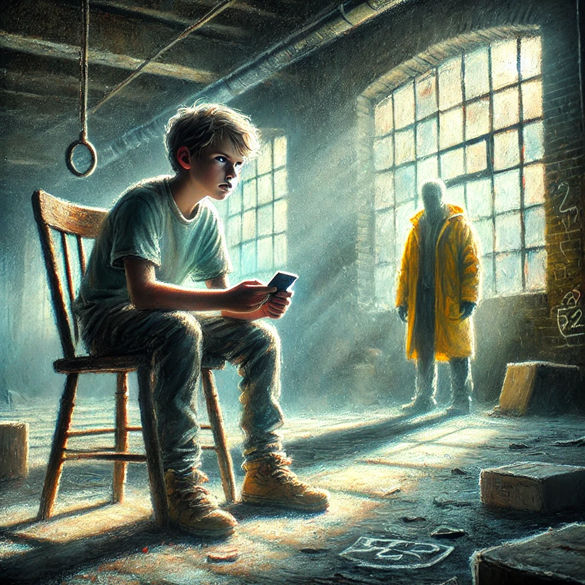

8. Dezember
In der Lagerhalle
 Die Schatten der Gasse schienen die Zeit anzuhalten. Johann spähte vorsichtig aus dem Fenster und sah eine alte, verlassene Lagerhalle. Die Fenster waren staubbedeckt, das Mauerwerk von Ranken überwuchert. „Hier?“ fragte Johann skeptisch. „Das soll ein sicherer Ort sein?“Hans nickte und schaltete den Motor aus. „Manchmal sind die unscheinbaren Orte die sichersten. Komm mit.“
Johann folgte Hans zögernd in die Lagerhalle. Der Raum war leer bis auf ein paar umgekippte Kisten und eine staubige Werkbank. Die Luft war abgestanden, und das gedämpfte Licht der Nachmittagssonne ließ die Umgebung unwirklich erscheinen.
„Setz dich“, sagte Hans und zeigte auf einen alten Stuhl in der Ecke. Johann gehorchte, das Handy fest in seiner Hand.
Er wollte Carlos anrufen. Das Telefon war ausgeschaltet - klar deshalb konnte ihn auch keiner anrufen. Er drueckte den An-knopf. Es wurde eine Pin verlangt.
„Das Telefon…“ begann Johann. „Ich habe versucht, es einzuschalten, aber…“
Hans lehnte sich gegen die Wand und verschränkte die Arme. „Das Handy ist geschützt. Es braucht eine PIN, um zu funktionieren. Dein Onkel hat gesagt, dass du den Code finden kannst, wenn du aufmerksam bist.“
Johann runzelte die Stirn und betrachtete das Gerät genauer. „Wo soll ich suchen?“
„Schau dir alles genau an“, antwortete Hans. „Manchmal hinterlässt man Hinweise, die nur für die richtigen Augen sichtbar sind.“
Johann drehte das Telefon in seinen Händen, überprüfte die Rückseite und schließlich das Akkufach. Als er die Batterie vorsichtig herausnahm, entdeckte er einen kleinen Zettel, der darunter eingeklemmt war. Er zog ihn heraus und entfaltete ihn. Darauf stand in einer eleganten Handschrift:
„Nur wer die zwei Briefe in der Hand hält und die Zeichen zu lesen versteht, dem wird die PIN wie ein Phönix aus der Asche erscheinen.“
Johann las die Worte mehrmals, sein Kopf voller Fragen. Er kramte nach den beiden Briefen in seiner Hosentasche und entfaltete sie. Was nur meinte Carlos mit “wie ein Phönix aus der Asche” ?
Plötzlich wurde Johann von einem Geräusch abgelenkt. Die Tür der Lagerhalle quietschte, als jemand eintrat. Es war eine Gestalt in einer gelben Regenjacke, deren Kapuze das Gesicht teilweise verdeckte. Johann erkannte sie sofort – das war die Person, die ihn vor dem Hotel angerempelt hatte!
Die Gestalt ging zu Hans, und die beiden begannen leise zu sprechen. Johann konnte ihre Unterhaltung von seinem Platz aus gerade so hören.
„Was ist denn das? Du bist im Weihnachtsmannkostüm?“ Die Person in der Regenjacke klang spöttisch. „Das war dein Plan?“
Hans hob die Schultern und grinste leicht. „Es war eine Notlösung. Ich hatte keine Zeit, etwas Besseres zu finden. Außerdem wollte ich nicht, dass Johann mich erkennt.“
„Erkennt?“ Die Stimme klang belustigt. „Du meinst, weil du ihm am Flughafen auffällig genug gefolgt bist?“
„Ich hatte das Gefühl, er hätte mich fast bemerkt“, verteidigte sich Hans. „Das Kostüm hat zumindest die Aufmerksamkeit abgelenkt.“
Die Gestalt schüttelte den Kopf. „Na schön. Was sind die nächsten Schritte?“
„Das wissen wir erst, wenn Johann die PIN entschlüsselt“, sagte Hans leise. „Ich hoffe, er ist genauso clever, wie Carlos behauptet hat.“
Johann zog den Kopf ein und tat so, als würde er noch den Zettel studieren. Doch seine Gedanken rasten. Hans hatte ihn beobachtet? Er braucht jetzt wirklich Antworten! Wie konnte er die Pin finden? Er drehte und wendete die beiden Briefe, aber konnte nichts erkennen, dass nur Ansatzweise nach einer Pin aussah.. " Phönix aus der Asche".. Er grübelte..
Da hat Johann eine Idee, es gab da doch so einen Trick um unsichtbare Schrift sichtbar zu machen..
Was soll Johann tun?